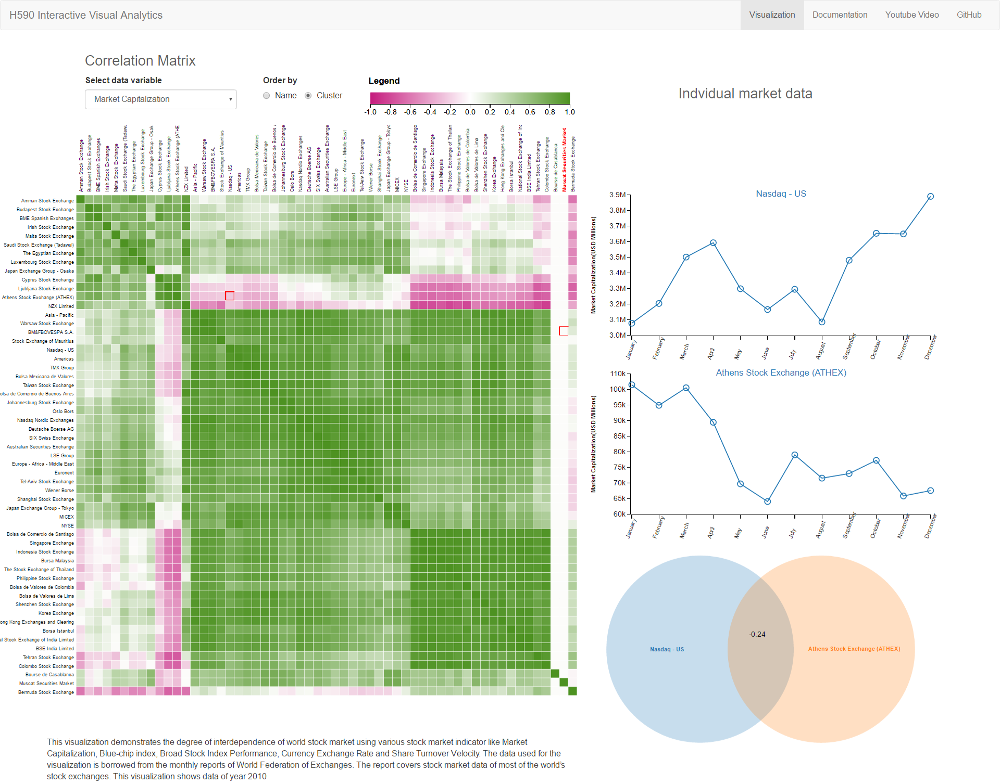

Published Research
Graphical Perception of Continuous Quantitative Maps: the Effects of Spatial Frequency and Colormap Design
K. Reda, P. Nalawade, K. Ansah-Koi. In Proceedings of CHI'18: ACM Conference on Human Factors in Computing Systems. Montreal, QC, Canada, April 21-26, 2018 (to appear)
Abstract
Continuous ‘pseudocolor’ maps visualize how a quantitative attribute varies smoothly over space. These maps are widely used by experts and lay citizens alike for communicating scientific and geographical data. A critical challenge for designers of these maps is selecting a color scheme that is both effective and aesthetically pleasing. Although there exist empirically grounded guidelines for color choice in segmented maps (e.g.,choropleths), continuous maps are significantly understudies, and their color-coding guidelines are largely based on expert opinion and design heuristics—many of these guidelines have yet to be verified experimentally. We conducted a series of crowdsourced experiments to investigate how the perception of continuous maps is affected by colormap characteristics and spatial frequency (a measure of data complexity). We find that spatial frequency significantly impacts the effectiveness of color encodes, but the precise effect is task-dependent. While rainbow schemes afforded the highest accuracy in quantity estimation irrespective of spatial complexity, divergent colormaps significantly outperformed other schemes in tasks requiring the perception of high-frequency patterns. We interpret these results in relation to current practices, and devise new and more granular guidelines for color mapping in continuous maps
Projects
Interdependence between Stock Markets
Based on the data from World Federation of exchanges we show the correlation between stock markets using an interactive visualization. The visualization is created using HTML, JavaScript and D3.js
View Visualization
